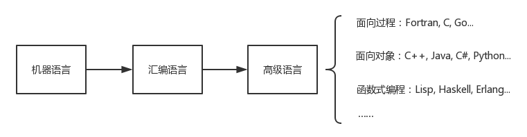
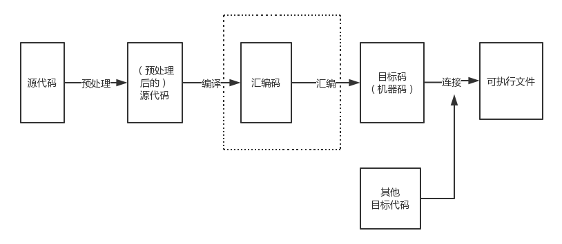

计算机硬件系统
计算机软件系统
采用二进制形式表示数据和指令
顺序执行程序
由运算器、存储器、控制器、输入设备和输出设备五大部件组成计算机硬件系统
编程就是让计算机为解决某个问题而使用某种程序设计语言编写程序代码，并最终得到相应结果的过程。为了使计算机能够理解人的意图，人类就必须要将需解决的问题的思路、方法、和手段通过计算机能够理解的形式告诉计算机，使得计算机能够根据人的指令一步一步去工作，完成某种特定的任务。这种人和计算机之间交流的过程就是编程。
程序设计的一般步骤


编译型：Fortran, Pascal, C, C++, Delphi, Go 等
解释型：Python, Perl, Ruby, Javascript, Erlang 等
混合型：Java, C# 等
编程语言都有各自的优缺点，没有最好的语言
常见选择（不绝对）：
硬件相关：汇编、C
桌面开发：面向对象编程语言
系统管理：脚本语言
C的诞生：1972年 美国贝尔实验室 Dennis M.Ritchie, Kenneth Lane Thompson
C 与 Unix 的渊源：C为Unix而生，Unix核心用C改写
C 与 C++：
C++与C有许多相似的语法
C: 面向过程
C++: 面向过程、面向对象、泛型编程等
课程使用C/C++的原因
使用人群广、资料丰富
开发工具丰富
许多编程语言的语法习惯与C相似，学会C/C++可以方便其他编程语言的学习
课程使用C++的方式：用C++的语法，用C的思路
高校的一些相关课程：高等数学、线性代数、概率论、离散数学、计算机原理、程序设计基础、面向对象程序设计、数据结构与算法、编译原理……
需要掌握什么：
编程语言
工具与平台的应用
用计算机解决问题的思路
……
需要养成的编程习惯
清晰的模块化
良好的代码风格
学习要靠自己
仅靠听别人讲是难以掌握的
阅读纸质书籍，自学语法细节
多上机练习，在错误中成长
学会阅读理解他人的代码，学会在纸上“运行”程序
学会搜索和提问
不要害怕英文，不要厌倦数学
耐得住寂寞，坚持不懈
C/C++（以及绝大多数编程语言）源代码的实质为文本文件。
// My First Programme
#include <iostream>
using namespace std;
int main()
{
cout << "Hello World!" << endl;
return 0;
}
在屏幕上显示（又常常成为打印）一行文字：Hello World!
编写出来的 C++ 代码无法直接运行，要先进行编译。

实际运用的过程中，我们往往利用前端一步到位地从源代码生成可执行文件。
编辑器（Editor），用于编写代码：notepad, notepad++, Sublime Text, VIM, Emacs...
编译器（Compiler），把源代码编译成可执行程序：GCC, VC++, Clang, TCC...
调试器（Debugger），帮助开发人员找到代码中的错误：GDB, DDD...
集成开发环境（IDE），集编辑、编译、调试功能为一体，有的还会提供工程管理、版本控制等功能：Visual Studio, Eclipse, KDevelop, Code::Blocks, Qt Creator, Dev C++...
这些工具都有各自的优缺点，可以根据自己的条件和需要来安装。
对于一般学习用途，大家可以安装 Orwell Dev-C++ （Windows 平台），它具有体积小、安装快的优点。安装好后，建议在编译选项中加上 -Wall，这样可以在一定程度帮助你发现代码中潜在的的问题。（设置方法为：工具 -> 编译器选项 -> 代码生成/优化 -> 代码警告 -> 显示最多警告信息(-Wall): Yes。）
// My First Programme
#include <iostream>
using namespace std;
int main()
{
cout << "Hello World!" << endl;
return 0;
}
C++ 注释：以 // 开头，直到行尾
C风格注释：以 /* 开头，以 */ 结尾
在 C++ 以及支持 C99 标准的 C 语言中，我们可以同时使用上面两种风格的注释。但应注意 /* */ 风格的注释不能嵌套。
注释的作用：注释通常是一些提醒性的文字，用来帮助阅读代码的人理解程序。注释不会被编译，不会对程序的功能造成影响。
注释举例：
/*
* Copyright (c) 2014 Wang Ziqin <wangziqin1998@qq.com>
*/
说明：第二行的 * 不是必须的，是为了对齐，使之易于阅读。
#include <iostream>包含流式(stream)输入输出(IO)头文件。请先记住，需要这样写后面才能用 cout 来输出文字。
using namespace std;这是一条 using 编译指令，它使得 std 名称空间中的所有名称都可用。也请先记住需要这样写。
main() 函数这是程序执行时的入口，我们编写的代码是从这里开始运行的。main() 是一个函数（Tips: C/C++ 中的“函数”与数学上常说的“函数”有一定的联系，但又不尽相同），它的前面有个 int，代表它的返回值类型为整型(Integer)（以后会进一步学习）。有一对花括号 { } 跟在 main() 的后面，花括号括起来的部分为 main() 函数的具体内容。
第 8、9 行各位一个语句，每个语句后都有一个半角分号 ;。我们可以把程序运行的过程理解为执行一个又一个语句的过程。
cout << "Hello World!" << endl;cout: 表示标准输出流。
"Hello World!"：这是个字符串，需要用半角双引号括起来。
endl：换行符。让接下来的输出从下一行开始。
<<：可以先把它形象地理解为“流的方向”——字符串 "Hello World!" 像水流一样流向输出设备（屏幕）。其实它是个被重载了的操作符。
return 0;返回语句。main() 函数执行完毕，向操作系统返回 0，表示成功运行并结束。
编写程序，输出两行内容如下：
I will be a good programmer.
I will never give up!
#include <iostream>
using namespace std;
int main()
{
cout << "I will be a good programmer." << endl;
cout << "I will never give up!" << endl;
return 0;
}
#include <iostream>
using namespace std;
int main()
{
cout << "I will be a good programmer.\nI will never give up!\n";
return 0;
}
\n 是个转义字符，表示换行符。
#include <iostream>
using namespace std;
int main()
{
cout << "I will be a good programmer" << endl << "I will never give up!" << endl;
return 0;
}
cout 可以连写，这样看起来是不是很像水流呢？
puts()#include <cstdio>
int main()
{
puts("I will be a good programmer.");
puts("I will never give up!");
return 0;
}
puts() 是 C 库中的函数，用于向标准输出设备（可理解为屏幕）输出字符串并换行。要使用 puts()，需要 #include <cstdio。
在 C++ 程序中包含 C 库头文件的方法：去掉 .h，在头文件名前加上 c。例如：
C 程序：#include <stdio.h>
C++ 程序：#include <cstdio>
实际上，直接使用 C 程序的方式通常也是可行的，但更加推荐不带 .h 的方法。
1、
// ex0_1.cpp
int main()
{
cout << "Hi! World!\n";
return 0;
}
2、
// ex0_2.cpp
include (iostream)
using namespace std;
int main()
{
cout << "I will be the best programmer.\n";
return 0;
}
3、
/* ex0_3.cpp
* Output "ABCDEFG"
*/
#include <cstdio>
int mian()
{
puts("ABCDEFG)";
return 0;
}
4、
/*
* ex0_4.cpp
/* Output "HIJKLMN" */
*/
#include <iostream>
int main()
{
cout《 "HIJKLMN"《 endl；
return 0；
}
5、
naim()
(
printf（“I love Computer Society!\n”）；
return (0)；
)
6、输出以下内容
*******
*****
***
*
7、输出以下内容
I'll be a good programmer.\t
8、输出以下内容
Hello World!\n I love this world!
9、输出 2048 行 Hello World。
西安邮电大学 计算机组成原理 第一章 计算机系统概论 第二节 计算机的硬件 http://cs.xiyou.edu.cn:84/jsjzcyl/a/zjs031020.htm
百度百科 冯·诺依曼体系结构 http://baike.baidu.com/view/9427882.htm
百度百科 编程 http://baike.baidu.com/view/3281.htm
编程语言发展历史 http://jstwind.com/t/30/
维基百科 C语言 http://zh.wikipedia.org/wiki/C%E8%AF%AD%E8%A8%80
维基百科 C++ http://zh.wikipedia.org/wiki/C%2B%2B
C++ Primer Plus 第2章 开始学习C++ 2.1.5 名称空间